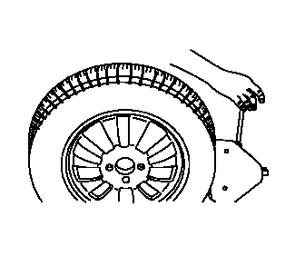
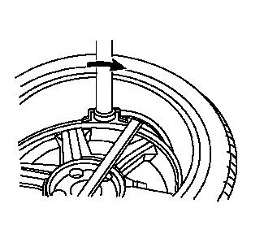
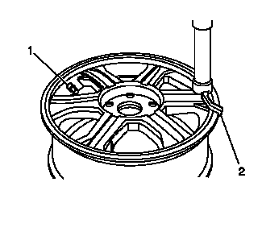
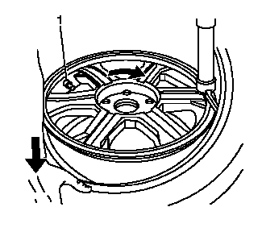
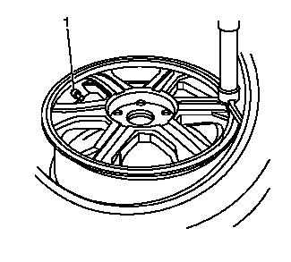
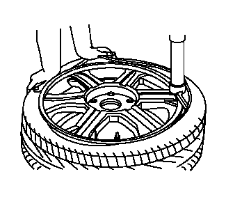

轮胎的拆卸和安装
告诫：
使用换胎机拆卸轮胎。不要仅使用手动工具或撬胎棒将轮胎从车轮上拆下。否则会损坏轮胎胎圈或轮辋。
告诫：
不要让换胎设备划伤或损坏铝制车轮上的透明涂层。刮伤透明涂层可能会造成铝制车轮腐蚀以及透明涂层从车轮上脱落。
告诫：
使用不正确的车轮附件或轮胎安装程序，可导致轮胎胎圈或车轮安装孔损坏。完全排空一个大轮胎内的空气最多需要70s。如果不按正确程序操作会导致换胎机在轮胎上施加过大的力，使车轮在安装面处弯曲。这种损伤会导致振动和/或摆振，严重情况下会导致车轮开裂。
1.
将气门芯从气门杆上拆下。
2.
给轮胎完全放气。
3.
使用轮胎更换装置将轮胎从车轮上拆下。按照步骤 4–7 将轮胎从车轮上拆下。

4.
当从车轮上分离轮胎胎圈时，使胎圈分离夹具与气门嘴呈 90、180 和 270 °。
告诫：
当拆卸和安装轮胎时，如果没有把气门嘴置于正确位置，则可能导致轮胎气压监测传感器损坏。
5.
安置车轮和轮胎时，使气门嘴位于相对于拆装头 7 点钟的位置。在撬胎棒上涂抹轮胎胎圈润滑剂，防止损坏轮胎胎圈。当将轮胎胎圈外边撬起至安装/拆卸头上方时，可插入撬胎棒或撬杆。

6.
安置车轮和轮胎时，使气门嘴再次位于相对于拆装头 7 点钟的位置。当将轮胎胎圈内边撬起至安装/拆卸头上方时，可插入撬胎棒或撬杆。
7.
从轮胎和车轮表面内侧清除所有残余的密封胶。如果从装备轮胎气压监测系统的车辆上拆下的轮胎上有轮胎密封胶，则更换轮胎压力传感器。参见
轮胎气压指示器传感器的更换
。
8.
使用中粗钢丝棉清除车轮胎圈座上的橡胶和轻度锈蚀。
告诫：
在安装轮胎时，使用经许可的轮胎安装润滑剂。请勿使用硅或腐蚀性基化合物润滑胎圈和轮辋。使用硅基化合物会导致轮胎在轮辋上打滑。腐蚀性化合物会导致轮胎或轮辋老化。
9.
将安装润滑油涂在轮胎胎圈和轮辋上。

10.
定位轮辋时，使气门嘴（1）位于相对于拆装头（2）7 点钟的位置。底部胎圈座嵌入时，此操作会保护传感器。

11.
使用换胎机，在将胎圈拉到轮辋内时，按顺时针方向转动轮胎/车轮总成。确保气门嘴（1）位于 7 点钟的位置。

12.
底部胎圈固定在车轮上后，重新定位车轮和轮胎，使气门嘴（1）位于相对于拆装头 7 点钟的位置。将轮胎胎圈安装至车轮的外部时，此操作可以保护传感器。

13.
使用轮胎更换装置将轮胎安装到车轮上。
警告：
充气时不得站在轮胎上面，以免发生严重的人身伤害。当胎圈卡到安全驼峰时，胎圈有可能破裂。如果胎圈没有就位，给任何轮胎充气时气压都不要超过 275 kPa (40 psi)。如果 275 kPa (40 psi) 的气压无法使胎圈就位，则对轮胎放气，重新润滑胎圈并重新充气。充气过足可能导致胎圈破裂并严重伤人。
14.
给轮胎充气，直到通过胎圈驼峰。确保此时没有安装气门芯。
15.
将气门芯安装到气门芯杆上。
16.
将轮胎充气至合适的气压。
17.
确保在轮胎的两侧均可看见定位环，以确认胎圈完全嵌入车轮内。